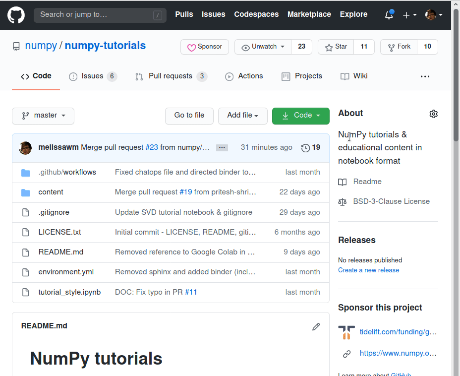
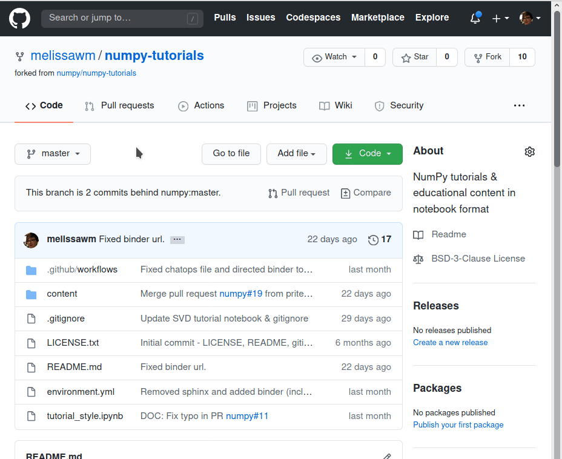
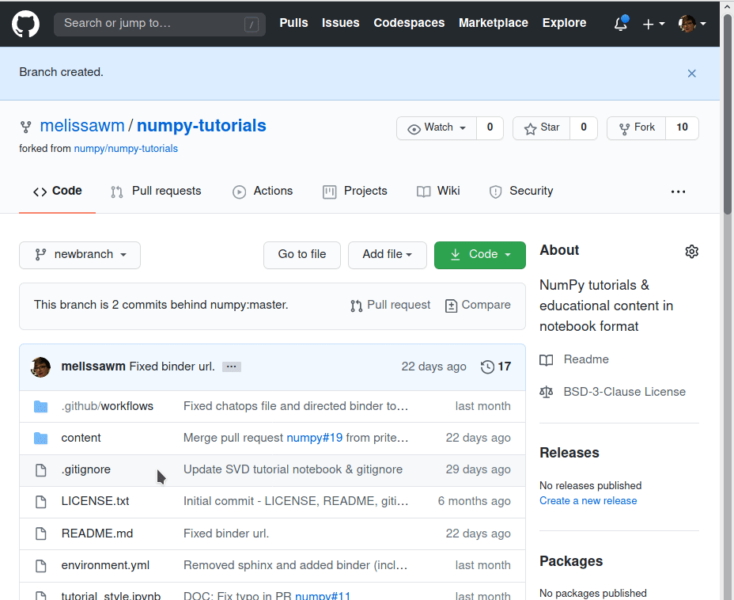
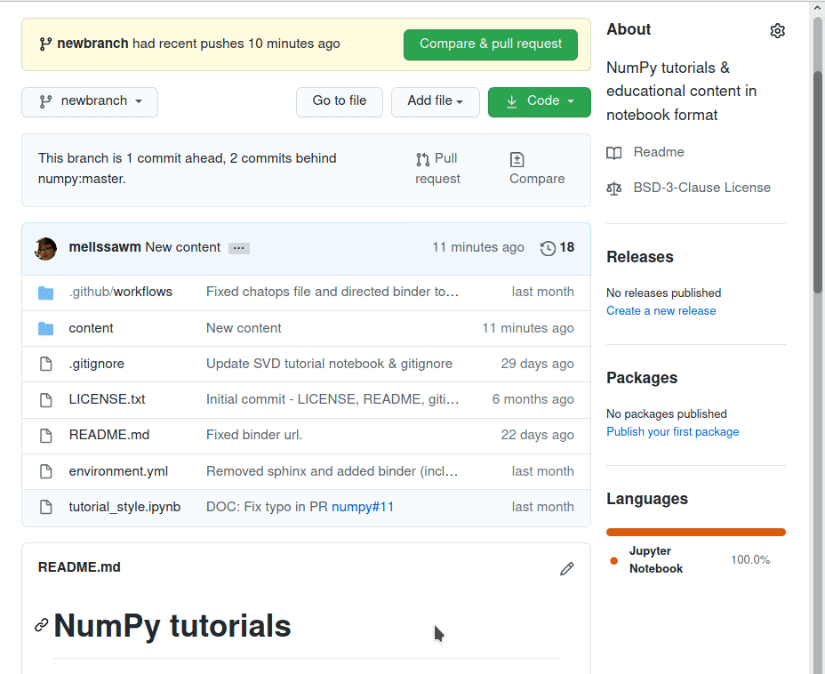
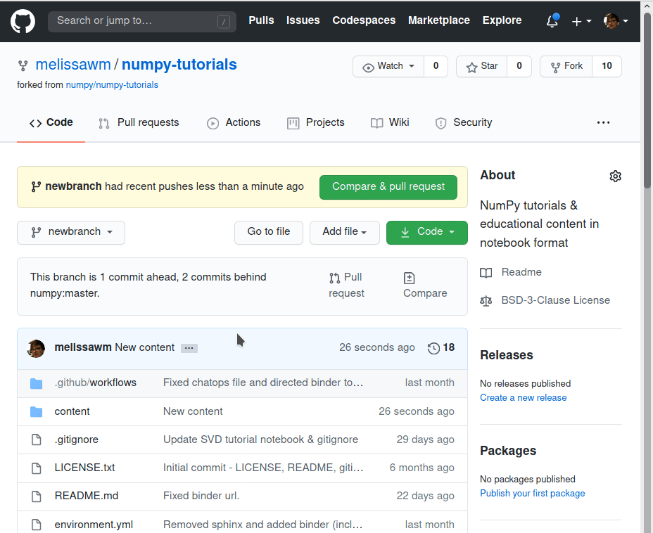

Contributing#
We very much welcome contributions! If you have an idea or proposal for a new tutorial, please open an issue with an outline.
Don’t worry if English is not your first language, or if you can only come up with a rough draft. Open source is a community effort. Do your best – we’ll help fix issues.
Images and real-life data make text more engaging and powerful, but be sure what you use is appropriately licensed and available. Here again, even a rough idea for artwork can be polished by others.
The NumPy tutorials are a curated collection of MyST-NB notebooks. These notebooks are used to produce static websites and can be opened as notebooks in Jupyter using Jupytext.
Note: You should use CommonMark markdown cells. Jupyter only renders CommonMark.
Why Jupyter Notebooks?#
The choice of Jupyter Notebook in this repo instead of the usual format (reStructuredText) used in the main NumPy documentation has two reasons:
Jupyter notebooks are a common format for communicating scientific information.
Jupyter notebooks can be launched in Binder, so that users can interact with tutorials
rST may present a barrier for some people who might otherwise be very interested in contributing tutorial material.
Note#
You may notice our content is in markdown format (.md files). We review and
host notebooks in the MyST-NB format. We
accept both Jupyter notebooks (.ipynb) and MyST-NB notebooks (.md).
If you want to sync your .ipynb to your .md file follow the pairing
tutorial.
Adding your own tutorials#
If you have your own tutorial in the form of a Jupyter notebook (an .ipynb
file) and you’d like to try add it out to the repository, follow the steps below.
Create an issue#
Go to numpy/numpy-tutorials#issues and create a new issue with your proposal. Give as much detail as you can about what kind of content you would like to write (tutorial, how-to) and what you plan to cover. We will try to respond as quickly as possible with comments, if applicable.
Check out our suggested template#
You can use this template to make your content consistent with our existing tutorials:
Upload your content#
Remember to clear all outputs on your notebook before uploading it.
Fork this repository (if you haven't before).
In your own fork, create a new branch for your content.

Add your notebook to the content/ directory.

Update the environment.yml file with the dependencies for your tutorial
(only if you add new dependencies).
Update this README.md to include your new entry.

Create a pull request. Make sure the "Allow edits and access to secrets by maintainers" option is selected so we can properly review your submission.
🎉 Wait for review!
For more information about GitHub and its workflow, you can see this document.